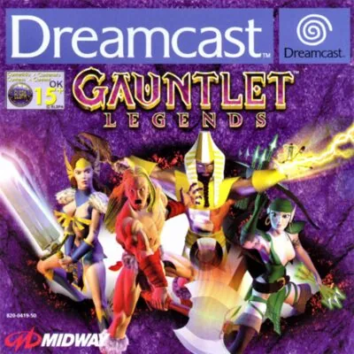

Dreamcast
Gauntlet Legends
- Año: 2000
- Desarrollador: Midway
- Género: Rol / Acción
- Jugadores: 4 jugadores
Gauntlet Legends es un juego de rol y acción en Dreamcast. La originalidad del título radica en la capacidad de realizar la aventura de hasta cuatro jugadores simultáneamente. Tu búsqueda es encontrar piedras rúnicas, todas peligrosamente vigiladas, que una vez reunidas abrirán las puertas del templo de demonios Skorne que debes eliminar.
Controles
que no haya fogonazos (va con renderizado síncrono) y que el héroe se mueva con el joystick (palanca analógica). Según las guías: B ataca, A es el turbo, Y usa una poción; B + A ataque turbo, Y + B lanza la poción y Y + A la usa como escudo. Que el J2 entre con 2P. ¿Va fluido?
Mando de Dreamcast: los botones son los mismos en todos los juegos (reicast no los cambia por juego). Los colores son los del mando original.
| Panel | Juego |
|---|---|
 | Mover (palanca analógica) |
 |  A A |
 |  B B |
 | Gatillo derecho |
 |  X X |
 |  Y Y |
 | Gatillo izquierdo |
 | Start |
 | Salir del juego |
El panel en Dreamcast


Argumento
Recopilado de internet (2026-11-04). Lo marcado con ⚠️ no está probado en la bartop.
Hace mucho tiempo, el mago corrupto Garm usó unas piedras rúnicas para invocar al demonio Skorne. Pero Skorne lo aplastó y encerró su alma en el Inframundo y, temiendo el poder de las piedras, las repartió por los cuatro reinos para que nadie pudiera usarlas contra él.
Los héroes tienen que vencer a los jefes de cada reino para conseguir las cuatro llaves del templo profanado, y reunir por el camino las trece piedras rúnicas, que permiten perseguir a Skorne hasta el Inframundo y acabar con él.
Final: con todas las piedras, los héroes siguen a Skorne al Inframundo y lo derrotan en su trono (ver «Vídeos»).
Fuentes
Jugabilidad
Recopilado de internet (2026-11-04). Lo marcado con ⚠️ no está probado en la bartop.
- Estructura: varios reinos de niveles, cada uno con su jefe, y al final el Inframundo (ver «Guía de niveles»); en Dreamcast, hasta cuatro jugadores a la vez (en la bartop, dos).
- Personajes: Guerrero (Koric, hacha, el más fuerte), Valquiria (Freya, espada, la más resistente), Arquera (Aeowyn, arco, la más rápida) y Mago (Siris, bastón, la mejor magia). Hay personajes extra que se ganan en minijuegos.
- Experiencia: al matar enemigos y coger tesoros, el personaje sube de nivel y mejora sus cuatro atributos: fuerza, velocidad, armadura y magia.
- Vida: la partida no se acaba mientras al personaje le quede vida.
- Pociones: la magia. Se lanzan alrededor, como granada o como escudo, según la combinación de botones.
- Turbo: ataques especiales más fuertes con la barra de turbo.
- Versión Dreamcast: incluye muchas cosas de Gauntlet Dark Legacy.
- Partidas: el personaje se guarda y se puede seguir más adelante.
Botones según las guías (⚠️ por confirmar)
| Mando de Dreamcast | Panel | Acción |
|---|---|---|
| Cruceta o palanca | | Moverse y apuntar |
| A | | Atacar |
| B | | Turbo |
| X | | Usar una poción (magia alrededor) |
| A + B | + | Hacer el ataque turbo |
| X + A | + | Lanzar la poción como una granada |
| X + B | + | Usar la poción como escudo mágico |
| Start | | Pausar |
- Hay otra configuración de fábrica, Crossbow, que cambia el turbo por el ataque; también se pueden elegir los botones.
Guía de niveles
Recopilado de internet (2026-11-04). Lo marcado con ⚠️ no está probado en la bartop.
| Tramo | Niveles (y jefes) |
|---|---|
| 1 | Valley of Fire · Dagger Peak · Cliffs of Desolation · Lost Cave · Volcanic Cavern · Dragon's Lair (un dragón) |
| 2 | Poison Fields · Castle Courtyard · Tower Armory · Castle Treasury · Mausoleum · Dungeon of Torment · Chimera's Keep (una quimera) |
| 3 | City Ruins · Temple of Magi · Mystic Pyramid · Tombs of the Undead · Genie's Sanctum (un genio) |
| 4 | Acid Swamp · Twisted Roots of Evil · Ancient Tree · Gnarled Branches · Web of the Queen Spider (la reina araña) |
| Final | Desecrated Temple · Altar of Skorne · Battle Trenches · Fortified Towers · Infernal Fortress · Gates of the Underworld · Throne of Skorne |
- Nombres y orden: los de los capítulos del vídeo de «Vídeos», con cada tramo cerrado por su jefe. StrategyWiki agrupa los niveles en reinos (montaña, castillo, ciudad, hielo, catedral, campo de batalla e inframundo); ⚠️ el reparto exacto de cada nivel no lo he comprobado.
- Piedras rúnicas: tres en cada reino y, en las versiones de consola, una más en el campo de batalla.
Objetos
Recopilado de internet (2026-11-04). Lo marcado con ⚠️ no está probado en la bartop.
| Objeto | Qué hace |
|---|---|
| Brújula | Se tiene desde el principio; ayuda a orientarse |
| Llave | Abre puertas y cofres; sirve en cualquiera y se puede guardar para otros niveles |
| Poción | La magia: alrededor, como granada o como escudo. Su fuerza depende de la magia del personaje |
| Aliento (ácido, eléctrico, fuego) | Unos cuantos ataques de aliento del elemento |
| Amuleto (luz, ácido, eléctrico, fuego) | Añade el elemento al arma y aumenta el daño |
| Escudo (eléctrico, fuego) | Protege y daña a los enemigos que tocan |
| Invisibilidad | Los enemigos te ven peor |
| Levitar | Flotar sobre las trampas del suelo |
| Botas de velocidad | Correr más un rato |
| Disparo triple / quíntuple | Varios proyectiles por disparo |
| Disparo rápido | Dispara más deprisa |
| Disparo y escudo de rebote | Los disparos rebotan en las paredes / los ataques vuelven al enemigo |
| Supertiro | Unos cuantos ataques como el turbo más fuerte |
| Parar el tiempo | Detiene enemigos, generadores y trampas |
| Fénix | Un ave que ataca contigo un rato |
| Crecer / encoger enemigos | El personaje se hace gigante / los enemigos se hacen pequeños |
| Martillo del trueno | Un martillo enorme con unos cuantos golpes |
- Lo que no quieras se puede vender a Sumner para comprar atributos.
Fuentes
Trucos y secretos
Recopilado de internet (2026-11-04). Lo marcado con ⚠️ no está probado en la bartop.
Secretos
- Personajes extra: cada reino tiene una trampilla escondida en el suelo (con una calavera o una estrella) que lleva a un minijuego: hay que juntar 50 monedas.
- Los trucos de nombre y contraseña que circulan (por ejemplo, el pollo Pojo) son solo de la recreativa; los de GameShark son de Nintendo 64.
- ⚠️ No he encontrado trucos para la versión de Dreamcast.
Longplay

Partida completa de la versión Dreamcast (429 min), de Retro Emulation Archive, a dos jugadores y sin comentarios: Gauntlet Legends, Full Game Co-op, no commentary, Dreamcast - CRT.
Pulsa el minuto de un nivel para ver el vídeo desde ese punto.
Niveles
| Tramo | Niveles |
|---|---|
| 1 | |
| 2 | |
| 3 | |
| 4 | |
| Final |